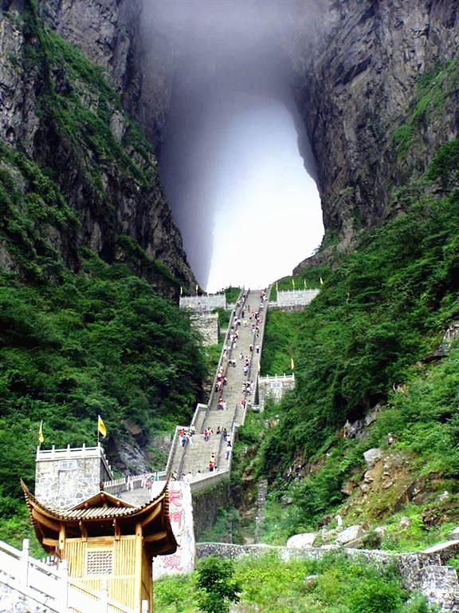

Bogda Peak – An Epitome Of Magnificence
Bogda Peak or Bogda Feng is the highest mountain in the Bogda Shan range,
in the eastern Tian Shan mountains, China, at 5,445 m and the northernmost 5,000 m or higher peak in Eurasia.
Bogda Peak is a challenging climb due to its steep relief. Its sides slope at angles of between 70° and 80°.
Great Wall
The Great Wall of China is a series of fortifications that were built across the historical
northern borders of ancient Chinese states and Imperial China as protection against various nomadic groups from the Eurasian Steppe.
tianzi mountains
Tianzi Mountain is a mountain in Zhangjiajie in the Hunan Province of China, close to the Suoxi Valley
in South Central China. Before the Ming Dynasty, Tianzi Mountain was known as "Qingyan Mountain" because of its green stones.
tianmen cave
The centerpiece of the Tianmen Mountain National Park, it is a natural hole that cuts through one side of the peak.
At 1520 meters above sea level, it is the highest natural arch in the world, earning its nickname “Gateway to Heaven.”
The cave alone is 131.5 meters tall, 57 meters wide, and 60 meters deep.